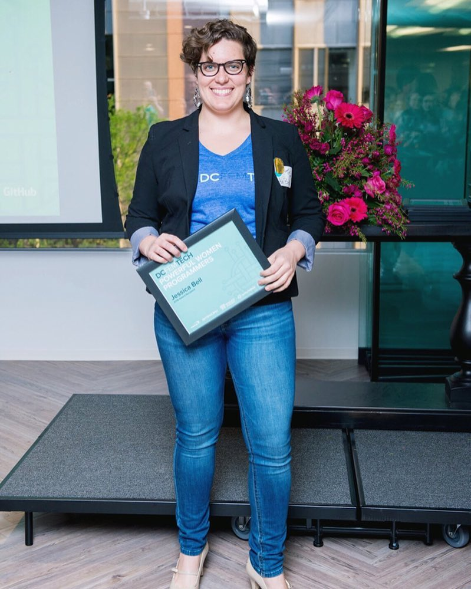

<div class="about clearfix">
  <div class="about-inner-wrapper">
    <div class="one-third-wrapper">
      
    </div>
    <div class="two-thirds-wrapper">
      <h2>
        About <br />
        Jessica Bell
      </h2>
      <p>
        Jess Bell is an experienced software engineer, currently supporting
        Wirecutter (part of the New York Times.) Prior to Wirecutter, Jess
        served in key engineering roles at the Washington Post, Deloitte
        Digital, and RepEquity focusing on front-end development.
      </p>
      <br />
      <p>
        Jess cares deeply about developing usable, well-designed web
        experiences, and thrives on helping colleagues find the best technical
        solutions for their needs. She has a strong propensity for
        cross-functional collaboration and leadership, and is eager to help
        increase the level of technical understanding for teams working outside
        of Engineering.
      </p>
      <br />
      <p>
        She's also passionate about the advancement of under-represented
        minorities in tech, and served on the leadership teams of DC Tech
        Meetup, DCFemTech, Women Who Code DC, and the DC Chapter of Association
        for Computing Machinery (ACM). She has taught many technical courses at
        General Assembly, the Arlingon Public Library, and multiple conferences
        and meetup events. She actively serves as Chair of the Distinguished
        Speakers Committee, is the co-host for ACM's ByteCast podcast, and also
        self-produces her own podcast, DC Tech Stories.
      </p>
      <br />
      <p>
        When Jess is away from her code base and other digital projects she
        explores cooking, gardening, sewing, and other creative activities that
        nurture her inherent curiosity and social nature. Jess currently resides
        in San Francisco with her partner, Seth, and their kitten, Lola.
      </p>
    </div>
  </div>
</div>
